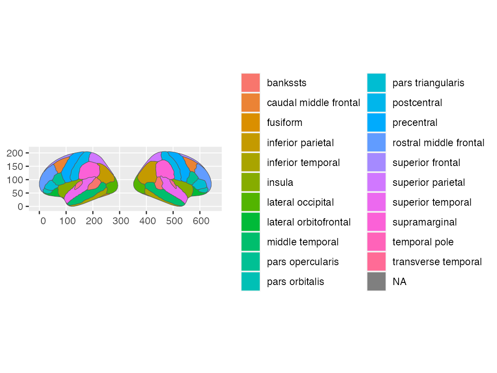
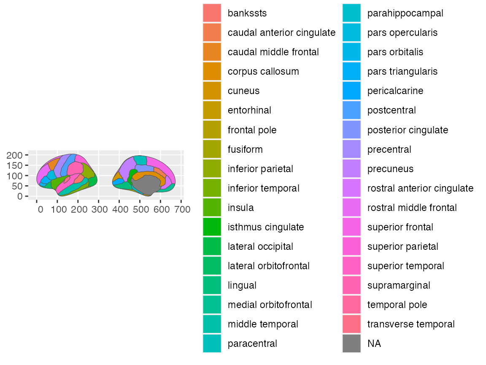
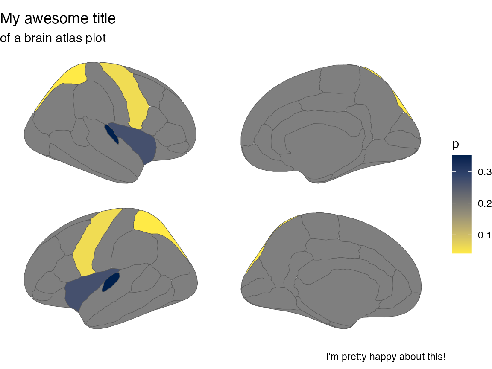
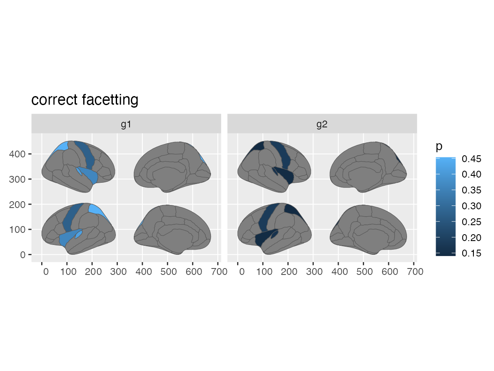

The new ggseg-package version has introduced a new way of plotting the brain atlases, through a custom geom_brain (variant of geom_sf). This has introduced a lot of new functionality into the package, in addition to some new custom methods and objects.
The brain-atlas class
The first new thing to notice is that we have introduced a new atlas class called brain-atlas. This class is a special class for ggseg-atlases, that contain information in a specific way. They are objects with 4-levels, each containing important information about the atlas in question.
dk$atlas
#> [1] "dk"
dk$type
#> [1] "cortical"
dk$palette
#> bankssts caudal anterior cingulate
#> "#196428" "#7D64A0"
#> caudal middle frontal corpus callosum
#> "#641900" "#784632"
#> cuneus entorhinal
#> "#DC1464" "#DC140A"
#> fusiform inferior parietal
#> "#B4DC8C" "#DC3CDC"
#> inferior temporal isthmus cingulate
#> "#B42878" "#8C148C"
#> lateral occipital lateral orbitofrontal
#> "#141E8C" "#234B32"
#> lingual medial orbitofrontal
#> "#E18C8C" "#C8234B"
#> middle temporal parahippocampal
#> "#A06432" "#14DC3C"
#> paracentral pars opercularis
#> "#3CDC3C" "#DCB48C"
#> pars orbitalis pars triangularis
#> "#146432" "#DC3C14"
#> pericalcarine postcentral
#> "#78643C" "#DC1414"
#> posterior cingulate precentral
#> "#DCB4DC" "#3C14DC"
#> precuneus rostral anterior cingulate
#> "#A08CB4" "#50148C"
#> rostral middle frontal superior frontal
#> "#4B327D" "#14DCA0"
#> superior parietal superior temporal
#> "#14B48C" "#8CDCDC"
#> supramarginal frontal pole
#> "#50A014" "#640064"
#> temporal pole transverse temporal
#> "#464646" "#9696C8"
#> insula
#> "#FFC020"
dk$data
#> Simple feature collection with 90 features and 5 fields
#> Geometry type: MULTIPOLYGON
#> Dimension: XY
#> Bounding box: xmin: 0 ymin: 0 xmax: 1390.585 ymax: 205.4407
#> CRS: NA
#> # A tibble: 90 × 6
#> hemi side region label roi geometry
#> * <chr> <chr> <chr> <chr> <chr> <MULTIPOLYGON>
#> 1 left lateral <NA> <NA> 0001 (((84.32563 34.46407, 84…
#> 2 left lateral bankssts lh_bankssts 0002 (((214.8215 108.8139, 21…
#> 3 left lateral caudal middle frontal lh_caudalmiddlefrontal 0004 (((106.16 184.3144, 93.6…
#> 4 left lateral fusiform lh_fusiform 0008 (((256.5481 48.35713, 24…
#> 5 left lateral inferior parietal lh_inferiorparietal 0009 (((218.4373 161.6233, 21…
#> 6 left lateral inferior temporal lh_inferiortemporal 0010 (((250.7745 70.75764, 24…
#> 7 left lateral lateral occipital lh_lateraloccipital 0012 (((277.4615 115.0523, 27…
#> 8 left lateral lateral orbitofrontal lh_lateralorbitofrontal 0013 (((66.26648 69.56474, 56…
#> 9 left lateral middle temporal lh_middletemporal 0016 (((238.0128 91.25816, 23…
#> 10 left lateral pars opercularis lh_parsopercularis 0019 (((79.03391 126.496, 74.…
#> # … with 80 more rowsOf these four, only the palette is an optional part, where some atlases may have this field empty. The data, you might notice, is simple-features data, with a geometry column that includes all the information needed to plot the data as a simple features object. You can actually call plot directly on the data, and the standard simple features plot will appear.
plot(dk$data)Even better, though, you should call plot directly on the atlas object. This will give you a fast overview of the atlas you are thinking of using.
plot(dk)
You will notice that the new atlas-class has better resolution and default values that what you get from the ggseg-atlas class.
Extracting atlas information
This new class also comes with a new custom printout method, that should give you a better idea of the atlas content. It lists information such as:
- type of atlas
- number of unique regions
- hemispheres
- slice views
- whether it has a built-in palette
And in addition it has a preview of the data content, so you may more easily discern how you might adapt your own data to fit the atlas data.
dk
#> # dk cortical brain atlas
#> regions: 35
#> hemispheres: left, right
#> side views: lateral, medial
#> palette: yes
#> use: ggplot() + geom_brain()
#> ----
#> hemi side region label roi
#> <chr> <chr> <chr> <chr> <chr>
#> 1 left lateral bankssts lh_bankssts 0002
#> 2 left lateral caudal middle frontal lh_caudalmiddlefrontal 0004
#> 3 left lateral fusiform lh_fusiform 0008
#> 4 left lateral inferior parietal lh_inferiorparietal 0009
#> 5 left lateral inferior temporal lh_inferiortemporal 0010
#> 6 left lateral lateral occipital lh_lateraloccipital 0012
#> 7 left lateral lateral orbitofrontal lh_lateralorbitofrontal 0013
#> 8 left lateral middle temporal lh_middletemporal 0016
#> 9 left lateral pars opercularis lh_parsopercularis 0019
#> 10 left lateral pars orbitalis lh_parsorbitalis 0020
#> # … with 76 more rowsSome users have also wanted to easier ways of checking the names of regions and labels of an atlas, in order to check if their data fits the atlas data. In order to make this easier, we have added two new functions that should help you with that.
brain_regions(dk)
#> [1] "bankssts" "caudal anterior cingulate"
#> [3] "caudal middle frontal" "corpus callosum"
#> [5] "cuneus" "entorhinal"
#> [7] "frontal pole" "fusiform"
#> [9] "inferior parietal" "inferior temporal"
#> [11] "insula" "isthmus cingulate"
#> [13] "lateral occipital" "lateral orbitofrontal"
#> [15] "lingual" "medial orbitofrontal"
#> [17] "middle temporal" "paracentral"
#> [19] "parahippocampal" "pars opercularis"
#> [21] "pars orbitalis" "pars triangularis"
#> [23] "pericalcarine" "postcentral"
#> [25] "posterior cingulate" "precentral"
#> [27] "precuneus" "rostral anterior cingulate"
#> [29] "rostral middle frontal" "superior frontal"
#> [31] "superior parietal" "superior temporal"
#> [33] "supramarginal" "temporal pole"
#> [35] "transverse temporal"
brain_labels(dk)
#> [1] "lh_bankssts" "lh_caudalanteriorcingulate"
#> [3] "lh_caudalmiddlefrontal" "lh_corpuscallosum"
#> [5] "lh_cuneus" "lh_entorhinal"
#> [7] "lh_frontalpole" "lh_fusiform"
#> [9] "lh_inferiorparietal" "lh_inferiortemporal"
#> [11] "lh_insula" "lh_isthmuscingulate"
#> [13] "lh_lateraloccipital" "lh_lateralorbitofrontal"
#> [15] "lh_lingual" "lh_medialorbitofrontal"
#> [17] "lh_middletemporal" "lh_paracentral"
#> [19] "lh_parahippocampal" "lh_parsopercularis"
#> [21] "lh_parsorbitalis" "lh_parstriangularis"
#> [23] "lh_pericalcarine" "lh_postcentral"
#> [25] "lh_posteriorcingulate" "lh_precentral"
#> [27] "lh_precuneus" "lh_rostralanteriorcingulate"
#> [29] "lh_rostralmiddlefrontal" "lh_superiorfrontal"
#> [31] "lh_superiorparietal" "lh_superiortemporal"
#> [33] "lh_supramarginal" "lh_temporalpole"
#> [35] "lh_transversetemporal" "rh_bankssts"
#> [37] "rh_caudalanteriorcingulate" "rh_caudalmiddlefrontal"
#> [39] "rh_corpuscallosum" "rh_cuneus"
#> [41] "rh_entorhinal" "rh_frontalpole"
#> [43] "rh_fusiform" "rh_inferiorparietal"
#> [45] "rh_inferiortemporal" "rh_insula"
#> [47] "rh_isthmuscingulate" "rh_lateraloccipital"
#> [49] "rh_lateralorbitofrontal" "rh_lingual"
#> [51] "rh_medialorbitofrontal" "rh_middletemporal"
#> [53] "rh_paracentral" "rh_parahippocampal"
#> [55] "rh_parsopercularis" "rh_parsorbitalis"
#> [57] "rh_parstriangularis" "rh_pericalcarine"
#> [59] "rh_postcentral" "rh_posteriorcingulate"
#> [61] "rh_precentral" "rh_precuneus"
#> [63] "rh_rostralanteriorcingulate" "rh_rostralmiddlefrontal"
#> [65] "rh_superiorfrontal" "rh_superiorparietal"
#> [67] "rh_superiortemporal" "rh_supramarginal"
#> [69] "rh_temporalpole" "rh_transversetemporal"Plotting the atlas
For other than quick overviews of the atlas using plot this new atlas class is specifically made to work with the new geom_brain. Since we have better control over the geom, we have also optimised it so that when plotting just the atlas, without specifying fill the polygons are automatically filled with the region column.
ggplot() +
geom_brain(atlas = dk)
This new geom makes it possible for you to also better control the position of the brain slices, using specialised function for this to the position argument. The position_brain function takes a formula argument similar to that of facet_grid to alter the positions of the slices.
ggplot() +
geom_brain(atlas = dk, position = position_brain(hemi ~ side))A new addition to the positions, is the ability to also specify the order directly through a character vector. By default, the position is:
cortical_pos <- c("left lateral", "left medial", "right medial", "right lateral")
ggplot() +
geom_brain(atlas = dk, position = position_brain(cortical_pos))
# Which can easily be switched around!
cortical_pos <- c("right lateral", "left medial", "right medial", "left lateral")
ggplot() +
geom_brain(atlas = dk, position = position_brain(cortical_pos))Reducing slices
Many have wanted the option like in ggseg() to only see a single hemisphere or slice. This functionality had been added through the hemi and side arguments to geom_brain(), mimicking the way ggseg() works.
ggplot() +
geom_brain(atlas = dk, side = "lateral")
ggplot() +
geom_brain(atlas = dk, hemi = "left")
This also should work for subcortical atlases, but the hemisphere (hemi) specification should be used carefully, as it might end up looking quite different than what you intended!
ggplot() +
geom_brain(atlas = aseg, side = "axial", hemi = "left")Plotting with data
Of course, as usual, people will have their own data they want to add to the plots, using columns from their own data to the plot aesthetics. By making sure at least one column in your data has the same name and overlapping content as a column in the atlas data, geom_brain will merge your data with the atlas and create your plots.
library(dplyr)
#>
#> Attaching package: 'dplyr'
#> The following objects are masked from 'package:stats':
#>
#> filter, lag
#> The following objects are masked from 'package:base':
#>
#> intersect, setdiff, setequal, union
someData = tibble(
region = c("transverse temporal", "insula",
"precentral","superior parietal"),
p = sample(seq(0,.5,.001), 4)
)
someData
#> # A tibble: 4 × 2
#> region p
#> <chr> <dbl>
#> 1 transverse temporal 0.272
#> 2 insula 0.329
#> 3 precentral 0.114
#> 4 superior parietal 0.151And such plots can be further adapted with standard ggplot themes, scales etc, to your liking.
ggplot(someData) +
geom_brain(atlas = dk,
position = position_brain(hemi ~ side),
aes(fill = p)) +
scale_fill_viridis_c(option = "cividis", direction = -1) +
theme_void() +
labs(title = "My awesome title",
subtitle = "of a brain atlas plot",
caption = "I'm pretty happy about this!")
#> merging atlas and data by 'region'
Facet group data
Just like in ggseg, though, you still need to do some double work for faceting to work correctly. Because the atlas and your data need to be merged correctly, you will need to group_by your data before giving it to ggplot, for facets to work.
someData <- tibble(
region = rep(c("transverse temporal", "insula",
"precentral","superior parietal"), 2),
p = sample(seq(0,.5,.001), 8),
groups = c(rep("g1", 4), rep("g2", 4))
)
someData
#> # A tibble: 8 × 3
#> region p groups
#> <chr> <dbl> <chr>
#> 1 transverse temporal 0.026 g1
#> 2 insula 0.241 g1
#> 3 precentral 0.38 g1
#> 4 superior parietal 0.208 g1
#> 5 transverse temporal 0.106 g2
#> 6 insula 0.324 g2
#> 7 precentral 0.137 g2
#> 8 superior parietal 0.188 g2
someData %>%
group_by(groups) %>%
ggplot() +
geom_brain(atlas = dk,
position = position_brain(hemi ~ side),
aes(fill = p)) +
facet_wrap(~groups) +
ggtitle("correct facetting")
#> merging atlas and data by 'region'